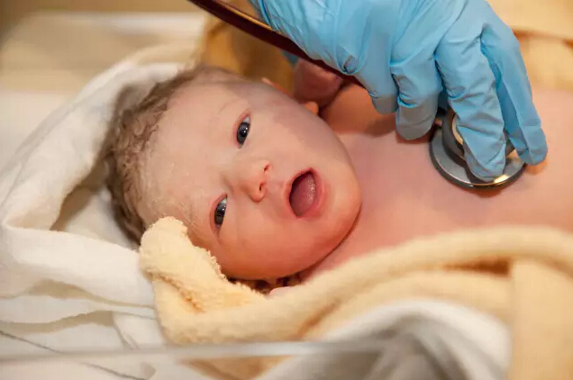

专坑妈妈们的8个育儿谣言，背后真相你知道多少？
这年头，妈妈们对于养孩子是越来越注重科学性了，互联网给了所有人一个便利的学习条件，妈妈们不仅可以在网上学习育儿知识，还可以在各种朋友群或者论坛一起咨询交流。这本是一件大好事，可有时候如果不仔细甄别，一不小心自己就成了信谣传谣的一份子了。
下面这些谣言或许仍旧有不少妈妈们奉为真理，想要告诉你的是：NO!NO!NO!
真相：戴上口罩继续喂奶吧，该吃药时还得吃药!
感冒是呼吸道传播的以病毒感染为主的上呼吸道症候群，妈妈感冒期间喂奶时只需戴上口罩，尽量别亲吻宝宝，避免呼吸道的飞沫直接播散就可以了，这样做是不会轻易将感冒传给宝宝的。
哺乳期间妈妈感冒后，如果没有发烧，可不用服药，多喝水多休息等待自愈就可以了。如果有发热或者咳嗽，可以咨询医生后遵医嘱服药。
真相：别黑我，我可是妈妈的好帮手哦。
安抚奶嘴自带“招黑”体质，有人说安抚奶嘴会影响孩子的牙齿发育，实际呢?安抚奶嘴的特殊构造能避免并预防因频繁吸吮造成的牙龈、嘴型变形。只要不是长时间频繁地使用，都是不会对牙齿发育造成影响的。
还有人担心安抚奶嘴会让孩子形成依赖戒不掉，其实很多宝宝在6～9个月时随着活动的增加，都会主动戒掉这个习惯的，喜欢含着安抚奶嘴睡觉的孩子可以稍大一些再戒，最迟不超过2岁。相比较宝宝吃手的习惯来说，戒掉安抚奶嘴要容易的多。
真相：有些宝宝并不需要吃
鱼肝油的主要成分是维生素A和D。
母乳中缺少维生素D，母乳宝宝需要额外补充，妈妈吃再多也没用;
维生素A要不要补，取决于宝宝的营养摄取是不是均衡充足，比如哺乳期间妈妈合理膳食或者断奶后辅食添加均衡，一般维生素A就不会缺。
总之：如果营养摄取均衡可只补充维生素D，纯母乳宝宝每天需补维生素D400IU，纯配方奶喂养无需补充，混合喂养宝宝可视情况减量补充。
真相：晒太阳只是辅助手段哦
同上(谣言三)，纯母乳喂养的宝宝每天需补充400IU的维生素D，晒太阳可以经皮肤合成产生维生素D，但婴幼儿应该尽量避免太阳直射，涂抹防晒霜又会影响皮肤合成维生素D，而且到底合成了多少无从考量。
所以母乳婴儿并不能因为晒了太阳而停止补充维生素D，不过可以酌情减量。

真相：母乳永远是孩子最好的食物
不少老人会说，哺乳期来了例假，奶水就没营养了，甚至还有毒，妈妈必须断奶。
实际上，妈妈产后月经来潮后，乳汁成分会稍微有些变化，但并不影响奶水质量，更加没有毒。妈妈只需注重营养摄取均衡就可以了，可以继续哺乳。
真相：瘦不代表不健康，胖不代表就是养得好!
首先孩子的健康并不能简单用胖瘦来衡量，长得胖的宝宝可爱是可爱，但真的好么?
永远记住一句话，母乳才是宝宝最好的食物!除非是奶不够，宝宝喝不饱，那么可以适当添加配方奶。如果你奶水充足，宝宝喝的也不错，仅仅因为“宝宝看上去没别的孩子胖”就擅自去断奶改喝奶粉，那真的就是得不偿失了!
真相：DHA并不是越多越好
DHA是胎儿、婴儿中枢神经细胞膜的主要结构基础，对大脑、视网膜发育有着重要作用，俗称脑黄金。
母乳中含有丰富的DHA，正常母乳喂养的宝宝都不需要额外补充DHA。配方奶中已经添加了DHA，不少婴儿营养米粉也含有DHA，DHA不是摄取的越多越好，实际宝宝对它的需求是很少量的，过量补充反而会造成婴幼儿肾脏负担。
总之，喝母乳或者喝配方奶的宝宝只要奶量正常，都是不需要额外补充DHA的。
真相：孩子没那么容易缺!钙!
不少宝宝后脑勺一圈头发稀少，这叫“枕秃”，但与缺钙并没多大关系。造成这种现象的原因大多是由于宝宝睡觉时出汗多加上摇头摩擦导致的。
摇头的原因：不少宝宝因为肠绞痛会哭闹、不安，所以摇头;还有些宝宝因为两侧内耳发育不平衡，会出现抠耳朵、摇头的现象。等孩子大一些后这些现象都会自然消失。
宝宝头部爱出汗的原因：由于婴儿躯体绝大部分汗毛孔尚未开放，只有头发能够将汗液排出，所以一旦遇热就会发现满头大汗现象，尤其是在刚进入睡眠的时候。